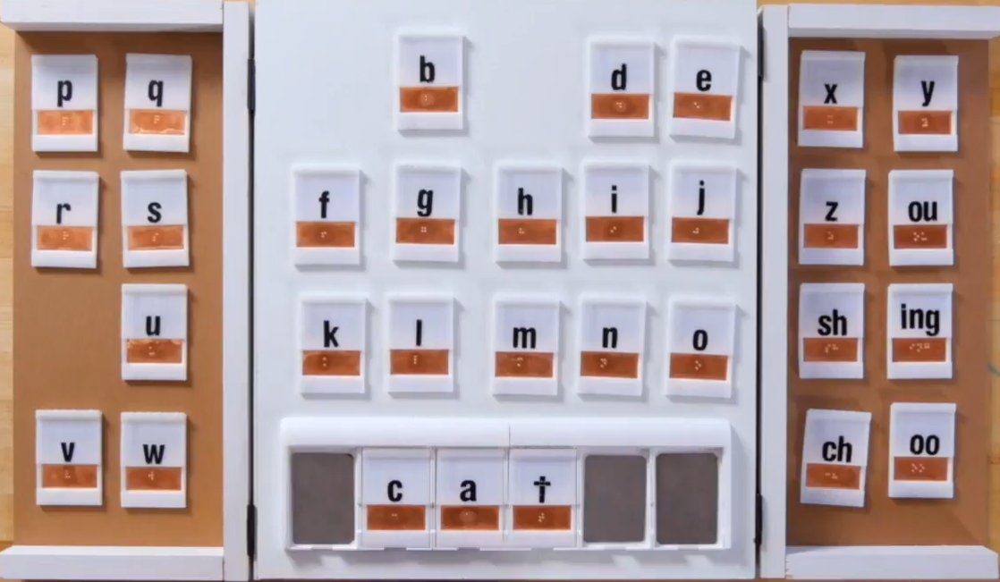

סביבות אינטראקטיביות
במסגרת הקורס מבוא לסביבות אינטראקטיביות התבקשנו לחקור נושא מסוים ואת השימוש בו בטכנולוגיה אינטראקטיביות.
העבודה נעשתה בקבוצות יחד עם דנה אוכמן ולוטן צוקר.
העבודה הוגשה למרצה: ארז פורת.
נושא העבודה שלנו היה "סביבות אינטראקטיביות לבעלי צריכים מיוחדים".
בעבודה זו חקרנו את הנושא וגילינו עד כמה הטכנולוגיה קריטית כדי לשפר את איכות חייהם של אוכלוסיות בעלי צרכים מיוחדים.
טכנולוגיות לדוגמא
Read read
מוצר המסייע לליקוי ראיה ללמוד לקרוא בשפת ברייל. כאשר הם גם שומעים את הצלילים וגם יכולים להרגיש אותם בצג האינטרקטיבי. 
TouchChat
תוכנה אשר ניתן להתקין על טאבלטים שונים ומשמשת כלוחות תקשורת עבור בעלי בעיות דיבור/תקשורת שונות.
ניתן לבחור מילים מתוך קטגוריות שונות ויחד עם מילות קישור מתאימות ליצור משפטים שלמים ובכך להביע רצונות, צרכים ורגשות.
התוכנה מראה את האייקונים המרכיבים את המשפט בחלק העליון של המסך וגם מקריאה אותם בקול רם.